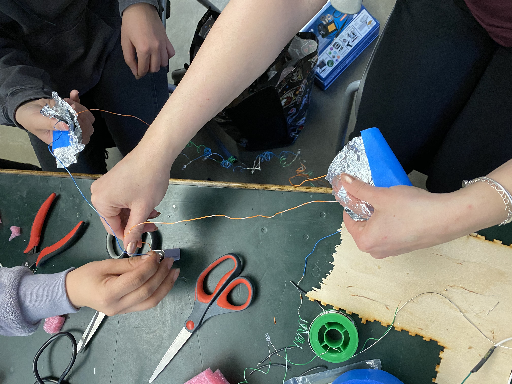

We worked individually to souder the wires, led, and battery for our brush bot. Then as a group(Monica,Vanna,Mona, and Vanya), we connected long lED strands

Brush Bot
I made a caterpillar brush bot
I basically connected all the parts together and gave it a fluffy pink appearance